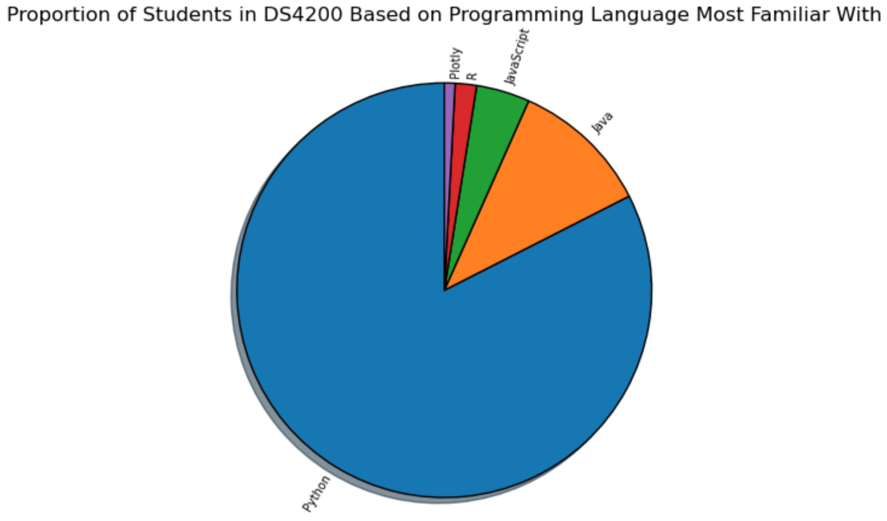

Marks
- Areas
Channels
- Position --> Both
- Represents the state
- This channel is a good choice because it accurately represents a map of the United States.
- Color
- Represents the political party
- This channel is a good choice because red and blue are the typical colors to represent the Republican and Democratic political parties, respectively; red is a color that pops out to the human eye; red and blue are two colors that contrast well and do a good job of separating distinct groups; and each color appears equally saturated.
- Shape
- Represents the state
- This channel is a good choice because it accurately represents the shapes of each state, and it makes the visualization easy to comprehend.
- Size --> Area
- Represents the state
- This channel is a good choice because it accurately represents the sizes of each state besides Alaska; nevertheless, including Alaska is helpful to convey the message to the viewer.
Colormap(s)
- Categorical
- Represents the political party
- This colormap is a good choice because the visualization consists of categorical data.
Marks
- Points
Channels
- Position --> Both
- Represents exit velocity in relation to launch angle, as well as the type of hit (ground ball, line drive, fly ball, pop-up)
- This channel is a good choice because it accurately represents the data that the visualization comprises of; additionally, it allows for the data to be condensed in one place.
- Color
- Represents the scoring value
- This channel is a mediocre choice because although it's easy for the viewer to differentiate the pink from the orange, it's difficult to pinpoint each shade of color. Also, in terms of the white dots, it's difficult to discern whether they represent the background of the image or average scoring value.
Colormap(s)
- Divergent
- Represents the scoring value
- This colormap is a good choice because it represents the thresholds of below average, average, and above average scoring value well.
Marks
- Areas
Channels
- Color
- Represents the programming language
- This channel is a good choice because each color helps the viewer distinguish each piece of the pie chart and thus each proportion of students, and each color can be pretty easily distinguished from the others.
- Tilt
- Represents the proportion of students who are familiar with a particular programming language
- This channel is a good choice because it also makes the size of each proportion of students intuitive to the viewer.
Colormap(s)
- Categorical
- Represents the programming language
- This colormap is a good choice because the visualization consists of categorical data.